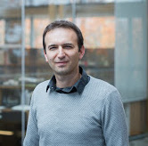

Ali Mesbah - test 1, Ph.D., P.Eng. Associate Professor
Electrical and Computer Engineering University of British Columbia
|
I am an Associate Professor in the department of Electrical and Computer Engineering (ECE) at the University of British Columbia (UBC). At UBC, I lead the Software Analysis and Testing (SALT) lab. You can reach me at amesbah@ece.ubc.ca My research is in software engineering, with emphasis on software analysis and testing of modern web-based and mobile systems. I am also interested in software maintenance and evolution, fault localization and repair, program comprehension, and empirical software engineering.
News
|

amesbah@ece.ubc.ca
Phone: 1-604-827-4249 Office: Kaiser, Room 4044 Address: 2332 Main Mall, Vancouver, BC, Canada V6T 1Z4
|